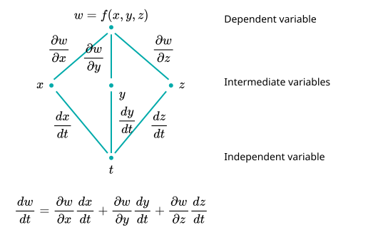

Definition 1.
If a vector field \(\vF\) can be written as \(\vF = \nabla f\text{,}\) where \(f\) is a scalar-valued function, then \(f\) is a potential function.
Piecewise smooth curves are curves that are made up of finitely many smooth pieces.
| Mehdi Ahmadi |
|---|
| Santa Clara University |
Reminder: A smooth curve has no sharp corners or cusps; when the tangent vector turns, it does so continuously.
If a vector field \(\vF\) can be written as \(\vF = \nabla f\text{,}\) where \(f\) is a scalar-valued function, then \(f\) is a potential function.
Piecewise smooth curves are curves that are made up of finitely many smooth pieces.
Let \(C\) be a smooth curve joining the point \(A\) to the point \(B\) in the plane or in space and parametrized by \(\vr(t)\text{.}\) Let \(f\) be a differentiable function with a continuous gradient vector \(\vF = \nabla f\) on a domain \(D\) containing \(C\text{.}\) Then

Consider the scalar-valued function \(f(x,y,z) = \dfrac{1}{\sqrt{x^2 + y^2 + z^2}}\text{.}\)
Calculate the gradient vector field \(\vF(x,y,z) = \nabla f\text{.}\)
Evaluate the line integral of the vector field \(\vF(x,y,z) = \nabla f\) over the following curve \(C_1\) parametrized as \(\vr(t) = \cos(t)\,\vi + \sin(t)\,\vj + t\,\vk\) from \((1,0,0)\) to \((1,0,2\pi)\text{.}\)
What is the result of \(\displaystyle\int_{C_2} \vF \cdot d\vr\) from \((1,0,0)\) to \((1,0,2\pi)\) where \(C_2\) is the line connecting the two points?
Consider the vector field \(\vF = yz\,\vi + xz\,\vj + (xy + 2z)\,\vk\text{.}\)
Find a function \(f\) such that \(\vF = \nabla f\text{.}\)
Use the solution of part (A) to calculate the line integral from \((1,0,-2)\) to \((4,6,3)\text{.}\)
Let \(\vF = M\,\vi + N\,\vj + P\,\vk\) be a vector field whose components are continuous throughout an open connected region \(D\) in space. Then \(\vF\) is conservative if and only if \(\vF\) is a gradient field \(\nabla f\) for a differentiable function \(f\text{.}\)
The following statements are equivalent.
\(\displaystyle\oint_C \vF \cdot d\vr = 0\) around every loop (that is, closed curve \(C\)) in \(D\text{.}\)
The field \(\vF\) is conservative on \(D\text{.}\)
Vector field: \(\vec{F}(x,y)\)
Curve \(C_1\)
Curve \(C_2\)
Question (1). In Figure 2, determine whether the work done by the force field along the two paths \(C_1\) and \(C_2\) is positive, negative, or zero.
Question (2). Does the vector field in Figure 2 appear to be conservative or not? Justify your answer.
Suppose that \(f(x,y) = x^3 y^2\) and calculate the line integral of the vector field \(\vF = \nabla f\text{,}\) along the line connecting \((-1,1)\) and \((1,1)\) in the two following ways.
By finding the vector field \(\vF\) and parametrizing the line connecting the two points.
By using the potential function \(f(x,y)\text{.}\)
Consider the vector field \(\vF = yz\,\vi + xz\,\vj + (xy + 2z)\,\vk\text{.}\) Is this field a conservative field?